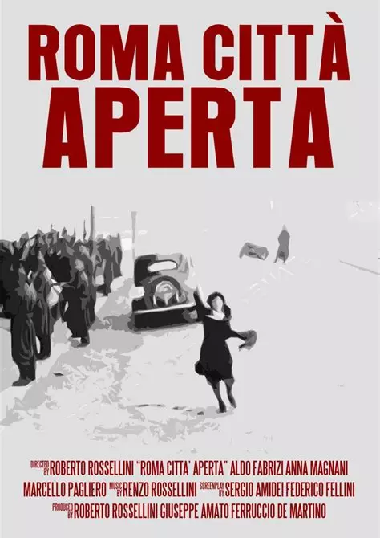

We began with one idea: the 1940s theme should evoke the entrance of a cinema at night. We used Pinterest to look for references for illuminated marquees, frames lined with bulbs, neon signs, lobby display cases and backlit title boards. Those references helped us decide which elements could become part of the site's title, itinerary cards and scene viewer.
The 1940s are the years of the liberation of Rome, of Rome, Open City and of the first postwar cinemagoing. The theme does not reconstruct a specific cinema. It evokes the place where the experience began: the entrance, with its lights, its announcements and its posters.
1944–1950
A studio without films
After the liberation of Rome in 1944, the Cinecittà studios sheltered displaced families. According to the Primo Levi Center, the grounds served as a refugee camp between 1944 and 1950, and the Allied requisition of the studios made filming on location a practical choice for postwar filmmakers.
Filming began on 18 January 1945, without a studio and with leftover film stock. The film premiered on 24 September 1945 to a mixed reception from critics, and in the following weeks audiences made it the first hit of the year.
The research project Italian Cinema Audiences studies the place of cinema in Italians' daily lives after the war, using 160 video interviews and over 1,000 questionnaires.
A cinema announced its programme on the marquee, where film titles were placed letter by letter. Marquees are described as neon-and-bulb landmarks that can be seen from blocks away, so the entrance was already part of the show.
The word “Cinema” sits above the title in Limelight, with wide letter-spacing. Layered text-shadow values build the red neon glow, and the sign body is a dark metal plate with a fine grain. A slow, irregular flicker repeats every nine seconds.
The frame of bulbs
The title is framed by a painted metal border with 22 bulbs along the top and bottom and 8 on each side (10 and 4 on small screens). Each bulb is drawn in CSS: a chrome socket, glass, a lit filament with a halo and a highlight. Two groups of bulbs alternate, so the light seems to run along the frame.
★ Now Showing ★Rome in Two Takes
The backlit board
The title appears as plastic letters on a cream panel lit from behind, with an aluminium profile and thin guide lines under each row, like a board with interchangeable letters. A small red “Now showing” line sits above it. When the page loads the board flickers on, as if the power had just been switched on.
03. Typography
Limelight
Rome in Two Takes
The neon sign and the main page headings (h1, h2). Capital letters with wide spacing, a dark outline and a soft glow recall the lettering of illuminated signs.
Anton
Historical Journey
The letters of the backlit board and the titles inside panels: itinerary cards, scenes, stops, modal windows and the numbers in round signs.
Bebas Neue
Itinerary 01 · Discover the itinerary
Labels and controls: buttons, the year selector, the “Itinerary” labels, scene counters, route notes and table headings.
Libre Baskerville
A city seen through cinema
Body text. Its italic is used for the subtitles of the itineraries, which work like the tagline of a film poster.
Josefin Sans
Home · Map · About
The main navigation, in capitals with wide tracking, like the lettering on a cinema's entrance.
Courier Prime
css/base.css
Code and file trees in the Technical Documentation, a typewriter face that echoes the scripts of the period.
04. Colour and materials
Brick red#94473bPage background, labels, hover and emphasis on panels
Deep wine#6e2b23Year selector
Cinema black#1c1b1bButtons and footer
Graphite#212121Header and drop-down menus
Painted metal#221c18Frames of the title, display cases and posters
Brass#a8864aThin rules, rings around numbers, outlines of buttons on dark frames
Cream#f4e8c1Rules, menu hover, secondary text on red
Poster paper#f3e7c8 → #eadbb6Itinerary cards, stop cards, mats around photographs
Bulb amber#ffd98aBulbs and their warm glow
Neon red#ff2d16The glow of the “Cinema” sign (a darker #8e1d10 for “Now showing” and film years)
Aluminium#aca496Profile around the backlit panels (from #d6cfc1 to #6c665b)
The page behaves like the wall of a cinema entrance, washed by the warm light of the bulbs. Dark painted metal, brass details and aluminium profiles form the frames, while cream surfaces, lit from behind, hold the text. Brick red ties the interface together and marks what can be selected.
05. Navigation and year selector
The header is a graphite bar with thin cream lines above and below. Its links are set in Josefin Sans capitals; on hover they turn cream, and the drop-down menus fill with cream. The year selector is a separate strip in deep wine with a brass line underneath. Years are set in Bebas Neue, and a small bulb sits between one year and the next, like the lamps of a marquee. On hover a year turns white and glows. On small screens the strip scrolls horizontally.
06. Basemap and cartographic style
The map style for this theme is still being defined. This section will be completed once the basemap has been chosen.
07. Markers and route lines
Markers
To be defined together with the map style.
Route lines
To be defined together with the map style.
08. Location lists and poster cards
Below the map, the individual itinerary views join the stops with a vertical
line of bulbs. Each stop has a round sign with a brass ring and a lit number,
which sits on the line, so the sequence reads like the lamps leading to
the entrance of a theatre.
Each stop is a small poster: cream paper inside a dark frame with a thin brass
line. The place name is set in Anton capitals, the film title appears in brick
red above the description, and the button uses Bebas Neue. Transport and directions
are quieter notes between cards, along a brass line, so the next move is available
without competing with the location itself.
The All locations view drops the line of bulbs and the numbers
and places the posters two per row, as a catalogue without a route order. An odd
last poster is centred.
The line of bulbs and the numbered signs show the reading order. The poster cards give each location a clear title and room for the film and the description.
09. Itinerary cards and scene viewer
On the homepage the two itineraries are display cases of the lobby. Each has a dark frame lined with bulbs, a thin brass line and a paper poster with the label (“Itinerary 01”), the title, two details between brick-red rules, a description and a button. On hover the case rises and the bulbs shine more brightly. Inside each route, the scene is a larger case of the same kind, with a row of bulbs above and below. Photographs are mounted prints with a cream mat and a brass outline, the arrows are round brass-ringed buttons, and the text sits on a backlit panel.
Historical Journey
Scenes and their locations are presented in a sequence, with round arrows and a scene counter to show where the reader is along the route.
Women & Urban Space
The same case brings together the view of the place today, the film image and the Story, Metadata and QR Code panels.
10. Posters and photographs

Front · The film poster
The poster keeps its original colours and is set in a dark frame, like a poster in the display case at the entrance. On hover the frame shines with the warm light of the bulbs.
Rome, Open City
1945
by Roberto Rossellini
A landmark of Italian Neorealism, the film portrays
Rome during the Nazi occupation and the struggle of the Resistance.
Back · The backlit panel
The reverse is a cream panel lit from behind, with an aluminium profile and faint guide lines, like the title board of the theatre. The title is in Anton, the year in red Bebas Neue. On the homepage, hovering over a poster turns it around to show these credits.
11. Metadata and how it is displayed
StoryMetadataQR Code
Technical Details & Metadata
Cinematic Context
Location
Project
The metadata panel
The three categories let readers choose which kind of information they want. The cream backlit panel stays within the same case as Story and QR Code, so switching views keeps the scene in context. The selected view turns brick red.
Cinematic Context
Film
A Special Day
Director
Ettore Scola
Year
1977
The record opens on its own
The selected record opens in a window styled as a small poster: a dark frame, a brass line, a title in brick red and field labels in the same colour. The project draws on Schema.org, Dublin Core and CIDOC CRM to describe films, locations and project credits.
12. The workflow panels
01
Brainstorming
02
Research
03
Narrative Design
04
Information Architecture
05
Prototyping
06
Content and metadata
07
Development
In the documentation each step is a small backlit panel with a numbered sign, like those on the map. A bulb between one step and the next links them in sequence. On narrower screens the steps wrap onto several rows and the bulbs disappear, since the sequence is no longer a single line.
13. Buttons and interaction states
Explore the map →HoverSelected
Buttons are solid near-black with a white label in Bebas Neue, which makes them
stand out on both the red page and the cream panels. On hover, page buttons fill
with cream and gain a soft glow, while buttons inside scenes and stop cards turn
brick red. On dark frames the buttons are outlined in brass.
The selected option must remain visible after the pointer moves away. In the map
filters it turns cream, and in the scene controls (views, audiences, text versions)
it turns brick red. The itinerary cards on the homepage also lift slightly on
hover, signalling that the entire card is clickable.
14. Animation and responsive behaviour
The motion of the theme is the light of the entrance. The neon sign flickers
every nine seconds, the bulbs of the frame alternate in a 1.3-second cycle,
and the title board flickers on in 1.8 seconds when the page loads. Cards and
panels rise slightly on hover, and a poster takes 0.6 seconds to turn around.
For visitors who prefer reduced motion, the sign, the bulbs and the board stay
still.
On a narrow screen the frame around the title uses fewer bulbs (10 along the top
and bottom and 4 on each side), the itinerary cases stack, the scene viewer
changes from a row to a column, and the workflow panels wrap. The year selector
scrolls horizontally, so that every label keeps its space.